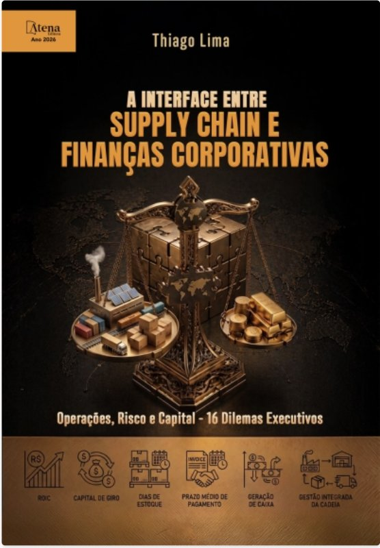

A rodada de negociações da Whirlpool: quanto valor Compras criou?
A diretoria de Suprimentos da Whirlpool S.A. fechou cinco negociações com fornecedores. Cada uma mexeu em uma alavanca diferente: preço, prazo, estoque ou proteção do fornecimento. O Conselho quer saber quais criaram valor para o acionista, quais não criaram, e por quê. Seu grupo vai simular cada negociação e responder.
As cinco negociações, os gastos por categoria e os fornecedores são hipotéticos, criados para o exercício. A base financeira da empresa usa receita, custos, EBIT, estoques, recebíveis e ativo fixo da DFP 2024 da Whirlpool S.A.; o prazo de pagamento (95 dias) e o WACC (14%) são premissas didáticas.


00Antes de começar: o mínimo de finanças que você precisa
| Lucro operacional (EBIT) | O que sobra das vendas depois de pagar os custos da operação, antes de juros e impostos. |
| Lucro após imposto (NOPAT) | O lucro operacional depois do imposto de renda. Aqui, 66% do EBIT (o imposto é 34%). |
| Capital investido | O dinheiro que fica parado para a operação funcionar: estoque, valores a receber de clientes e fábricas, menos o que a empresa ainda deve a fornecedores. |
| WACC | Quanto custa, por ano, cada real desse dinheiro parado. É a média entre os juros dos bancos e o retorno que os acionistas exigem. Na Whirlpool, 14% ao ano. |
| ROIC | Quanto a operação rende sobre o dinheiro parado nela: lucro após imposto ÷ capital investido. |
| EVA (valor criado) | O lucro que sobra depois de pagar o custo de todo o dinheiro parado. Se uma decisão aumenta o EVA, ela criou valor. |
1. Compras ganha dinheiro de dois jeitos
Pagando menos: o desconto vira lucro a mais, todo ano.
Deixando menos dinheiro parado: pagar o fornecedor mais tarde ou ter menos estoque libera caixa. O lucro não muda, mas a empresa precisa de menos dinheiro para funcionar.
2. Todo ano × uma vez só
Um desconto de R$ 75 mi aparece todo ano. Um prazo maior libera, digamos, R$ 82 mi uma única vez.
Por isso os dois números não podem ser somados: seria como somar um aumento de salário com um bônus único.
3. Dinheiro parado custa
Cada real parado em estoque ou em contas a receber custa 14% ao ano à Whirlpool. Então liberar R$ 100 mi de caixa vale R$ 14 mi por ano.
É assim que o exercício compara desconto e prazo na mesma régua: tudo vira "valor criado por ano".
4. O prazo tem preço
Se o fornecedor cobra 1% a mais para você pagar 30 dias depois, ele está te emprestando dinheiro. Um ano tem cerca de 12 períodos de 30 dias, então esse empréstimo custa cerca de 12% ao ano.
Vale a pena se for mais barato que os 14% que o dinheiro da empresa já custa.
5. O preço não é o custo
Um desconto que obriga a comprar lotes maiores ou a manter estoque extra traz dinheiro parado junto. O custo total de ter o material (TCO) soma preço, estoque, frete, qualidade e risco. Um bom comprador olha o custo total, não só o preço da nota.
01A empresa: Whirlpool S.A. (Brasil), 2024
Valores em R$ milhões. Esta base é fixa no exercício. Para usar a sua empresa, vá ao Simulador livre.
07O placar da rodada: as cinco negociações juntas
Depois das cinco missões, explique com as palavras do grupo por que o saving de preço, sozinho, não mede bem o resultado da área de Compras.
Use pelo menos dois conceitos vistos no exercício — por exemplo: lucro que se repete todo ano × caixa liberado uma vez, custo do dinheiro parado, preço do prazo, custo total (TCO) ou proteção do fornecimento. Se quiser, relacione com os quadrantes da Kraljic: que tipo de ganho tende a pesar mais em cada um?
Tudo é salvo automaticamente neste aparelho. O PDF sai com os dados digitados, os resultados e as respostas do grupo.